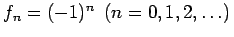
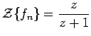
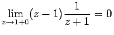
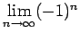

Inhalt Index DeskTop Bronstein

 Integraltransformationen Z-Transformation Eigenschaften der Z-Transformation Definition der Z-Transformation
Integraltransformationen Z-Transformation Eigenschaften der Z-Transformation Definition der Z-Transformation


Analog zu den Grenzwerteigenschaften der Bildfunktion der LAPLACE-Transformation (15.11b) gelten für die Z-Transformation die folgenden Grenzwertsätze:
Dabei kann z auf der reellen Achse oder längs eines beliebigen Weges nach  verlaufen. Da die Reihen
verlaufen. Da die Reihen
Auf diese Weise kann man die Originalfunktion {fn} aus ihrer Bildfunktion F(z) bestimmen.
Man kann den Wert von aus (15.116) aber nur ermitteln, wenn man weiß, daß der Grenzwert existiert, denn die obige Aussage ist nicht umkehrbar.
| Beispiel |
|
. Daraus folgt  und , aber  existiert nicht. |